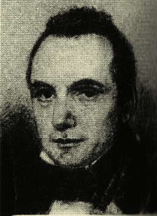

Kepler

Babbage, Charles

Bardeen, John


A számítógép története lényegében az első számítógépek kialakításával kezdődik és a számítógép gyorsabbá, olcsóbbá, elérhetőbbé tételének folyamatát rögzíti. A számítógépek a kézzel működtetett eszközökből a lyukkártyás, majd az előre programozott számítógépek irányába fejlődtek. A számítógép történetének ebben a szakaszában jelentős előrelépések történtek a számítógép architektúrájának fejlődésében, vagyis az adatbevitellel és -megjelenítéssel, tárolással, feldolgozással foglalkozó részek kidolgozásában és összekapcsolásában. A számítógép történetével szorosan összefügg a számítógépet alkotó részegységek története, mint például a processzor, a központi memória, a háttértár, az input és output eszközök. A 21. században sem állt le a számítógépek fejlődése, az újabb előrelépések elsősorban a számítógépek összekapcsolása, hálózatba szervezése terén, illetve a mindennapi élet használati tárgyaiba való integrálás terén jelentkeznek. A számítógép sebességének, kapacitásának növekedése, méretének és költségének (beszerzés és üzemeltetés) csökkenése a számítógép történetének egyik legmeghatározóbb eleme. Az első kereskedelmi számítógép Az első kereskedelmi számítógép • Charles Xavier Thomas of Colmar nevéhez fűződik az első kereskedelmi számítógép 1820-ban. • Az első ötven évben 1500 darabot készítettek.